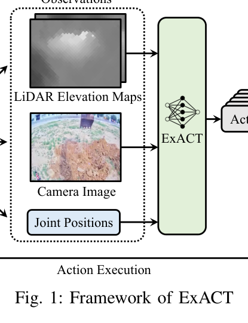
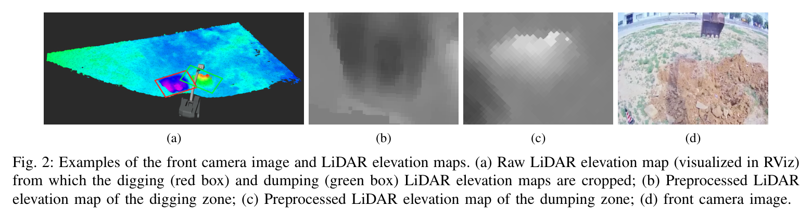
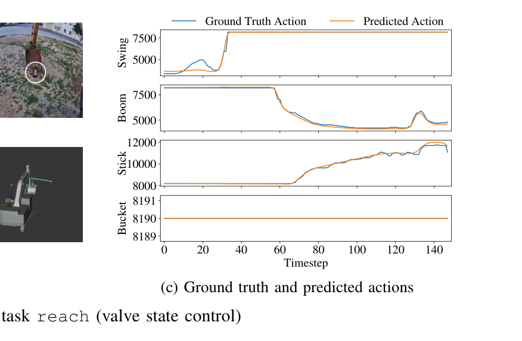
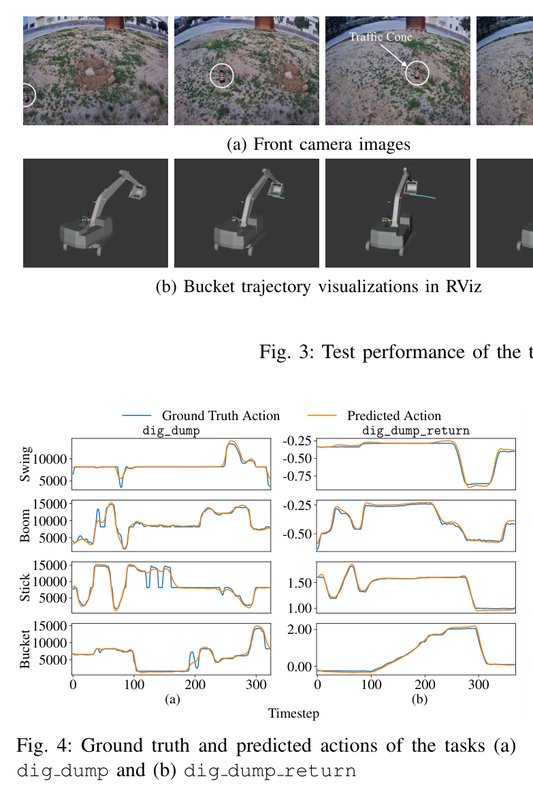
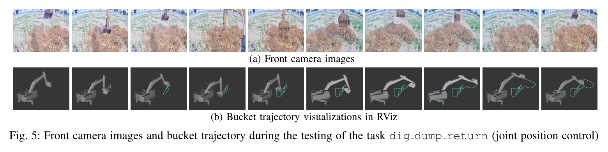

한줄 요약 — ExACT는 기존 인지–계획–제어 모듈을 분리하는 대신, 조건부 VAE와 Transformer로 멀티모달 관측에서 30스텝 행동 묶음을 만들고 시간 앙상블해 밸브 또는 관절 명령으로 실행한다. reach와 dig-dump-return은 모사했으나, 고주파 밸브 명령을 따라가지 못했고 실차 폐루프 안전성은 아직 입증되지 않았다.
1.연구 배경 및 동기
소수 시연으로 모듈식 자율굴착 체인을 종단간 정책으로 바꾸기
기존 자율굴착기는 인지·예측·계획·제어를 순차 실행하지만 작업 부하, 유압 지연, 밸브 데드존처럼 모델링하기 어려운 비선형성이 모듈 경계마다 누적된다. ExACT는 전방 영상·LiDAR 지형·관절 상태에서 밸브 또는 관절 명령까지 직접 매핑하는 데이터 기반 정책으로 이 사슬을 대체한다.
실험은 21.5톤 drive-by-wire 굴착기를 원격조작해 적은 완성 궤적을 모으고 Action Chunking with Transformers(ACT)로 미래 행동 묶음을 학습한다. 안전 때문에 정책을 실차 폐루프로 시험하지 않고 기록 센서와 밸브–관절속도 선형모델을 결합한 오프라인 검증으로 제한했다.

원문 Figure 1 · PDF p.1 — Fig. 1: Framework of ExACT
선행 연구의 한계
모듈식 시스템은 부하·지연·데드존을 정확히 모델링하기 어렵고 모듈 간 오차가 누적된다.
일반 행동복제는 매 시점 오차가 장기 궤적에서 누적되는 compounding error에 취약하다.
확산정책은 생성력이 높지만 고주파 굴착 제어에는 추론시간이 길 수 있다.
기존 학습 굴착은 궤적 추종이나 특정 접촉 단계에 집중해 원시 멀티모달 종단간 제어 사례가 제한적이다.
이 연구의 기여
전방 RGB, 4관절 위치, 굴착·덤핑 LiDAR 고도지도에서 밸브 또는 관절 명령을 출력하는 ExACT를 제시했다.
conditional VAE와 Transformer가 미래 30스텝 행동을 만들고 겹친 예측을 시간 앙상블로 평활화한다.
reach, dig-dump, dig-dump-return 세 작업에 8·12·12개 실차 원격조작 에피소드를 수집했다.
2,661개 밸브상태–관절속도 쌍으로 4관절 선형모델을 만들고 실차 투입 전 오프라인 검증에 사용했다.
2.방법론 및 시스템 구성
모든 작업은 swing·boom·stick·bucket의 4차원 관절 위치와 480×640×3 전방 영상을 입력받는다. dig-dump 계열은 원시 LiDAR 고도지도에서 굴착·덤핑 구역을 잘라낸 두 480×640×3 지역지도를 더한다. 영상은 작업기와 주변 외관, 고도지도는 두 작업영역의 3D 형상, 관절 상태는 현재 자세를 제공한다.
ACT의 conditional VAE는 사람 시연의 잡음과 행동 변이를 잠재표현으로 흡수하고 Transformer가 행동 묶음을 예측한다. 같은 실행시각을 가리키는 여러 chunk 예측은 지수 가중 temporal ensembling으로 결합한다. reach와 dig-dump는 밸브 상태, 더 긴 dig-dump-return은 관절 위치를 출력한다.
모든 작업에 4관절 위치·전방 영상을 넣고 dig-dump에는 굴착·덤핑 LiDAR 지역 고도지도를 추가한다.
3
행동 묶음 생성
conditional VAE와 Transformer가 현재 관측에서 미래 30스텝 밸브 또는 관절 위치 시퀀스를 예측한다.
4
Temporal ensembling
매 시점 새 chunk를 만들고 동일 미래시각의 후보 명령을 지수 가중 결합해 실행을 평활화한다.
5
밸브–관절속도 모델
2,661개 실차 쌍에서 swing·boom·stick·bucket 선형식을 적합한다. 기본 밸브값 8190은 속도 0에 대응한다.
6
기록 관측 테스트
작업별 한 에피소드를 테스트로 떼고 첫 관절상태만 실측으로 초기화한다. 이후 상태는 예측 행동으로 전개한다.
원문 수식과 의미
swing 밸브–속도 모델
논문 식 (1a)의 오프라인 선형 근사다.
boom 밸브–속도 모델
논문 식 (1b)의 boom 근사다.
stick 밸브–속도 모델
논문 식 (1c)의 stick 근사다.
bucket 밸브–속도 모델
논문 식 (1d)이며 실제 부하·지연·데드존을 완전히 재현하지 않는다.

원문 Figure 2 · PDF p.2 — Fig. 2: Examples of the front camera image and LiDAR elevation maps. (a) Raw LiDAR elevation map (visualized in RViz) from which the digging (red box) and dumping (green box) LiDAR elevation maps are cropped; (b) Preprocessed LiDAR elevation map of the digging zone; (c) Preprocessed LiDAR elevation map of the dumping zone; (d) front camera image.
3.핵심 기술
ACT action chunking과 조건부 생성
단일 행동 대신 미래 시퀀스를 예측해 짧은 구간의 굴착 시간구조를 학습하고 compounding error를 줄인다. conditional VAE는 동일 관측에서 달라지는 사람 조작을 하나의 평균으로 뭉개지 않고 잠재변수로 표현한다.
chunk size 30
KL divergence weight 10
Transformer 조건부 시퀀스 예측
학습률 1.0×10^-5, 30,000 steps
LiDAR 지역 고도지도의 작업 조건화
전방 RGB만으로 알기 어려운 굴착·덤핑 구역의 깊이와 형상을 LiDAR로 제공한다. 전체 고도지도에서 두 지역을 따로 잘라 정책이 어디서 퍼고 어디에 버릴지 3D 기하로 조건화한다.
굴착·덤핑 region 별도 crop
각 480×640×3
reach에는 고도지도 미사용
Fig. 2에 원시·전처리 지도 제시
밸브 직접제어와 관절위치 제어
reach와 dig-dump는 네 유압 밸브를 직접 출력하지만 dig-dump는 고주파 성분을 따라가지 못해 팔이 둔해지고 버킷 날이 과도하게 이동할 수 있었다. dig-dump-return은 관절 위치 제어로 바꿔 굴착·덤핑·swing·복귀 시퀀스를 완수했다.
밸브 대상 swing·boom·stick·bucket
기본값 8190에서 속도 0
dig-dump-return은 다음 굴착 준비까지 포함
제어변수 변경은 동일조건 절제가 아님
중첩 예측의 시간 앙상블
action chunking은 같은 실행시각에 여러 예측을 만든다. ExACT는 이를 지수 가중으로 결합해 단발 오류와 시연 불연속을 줄인다. 모든 테스트에 적용했지만 밸브 고주파 성분 자체를 복원하는 해결책은 아니다.
매 timestep 새 chunk
동일 시각 예측 결합
전 작업 테스트 적용
평활화와 동특성 복원은 구분

원문 Figure 3 · PDF p.3 — Fig. 3: Test performance of the task reach (valve state control)

원문 Figure 4 · PDF p.3 — Fig. 4: Ground truth and predicted actions of the tasks (a) dig dump and (b) dig dump return
4.실험 결과
실험 환경·장비·데이터
21.5톤 drive-by-wire 유압굴착기, RC·CAN bus 제어, GPU 탑재 산업용 컴퓨터를 사용했다.
작업은 traffic cone reach, 지정구역 dig-dump, 덤핑 뒤 다음 굴착 위치까지 돌아오는 dig-dump-return이다.
정책은 실차가 아니라 기록 영상·고도지도와 선형 밸브–속도 모델 기반 오프라인 시뮬레이터에서 시험했다.
실험 프로토콜
데이터는 10 Hz로 수집하고 작업별 완성 시연을 에피소드로 저장했다.
각 작업에서 한 에피소드를 테스트로 무작위 선택하고 나머지를 학습했다.
테스트 첫 관절 위치만 실측 초기화하고 이후는 예측 행동으로 계산해 기록 상태 누설을 피했다.
카메라·LiDAR는 테스트 에피소드 기록값을 사용하고 모든 작업에 temporal ensembling을 적용했다.
reach·dig-dump는 밸브 상태, dig-dump-return은 관절 위치 제어로 평가했다.
비교 기준
외부 학습·제어 베이스라인과 정량 성공률 비교는 없다.
테스트 에피소드의 사람 ground-truth 행동과 예측 행동 시계열을 비교했다.
reach는 RViz 버킷 경로와 밸브 상태, 다른 작업은 ground-truth와 예측 명령을 비교했다.
밸브와 관절위치 결과 차이는 난이도를 보이지만 정식 절제 실험은 아니다.
평가 지표
작업별 에피소드 수와 평균 길이
예측·ground-truth 행동의 시계열 정합
RViz 버킷 궤적과 작업 순서
고주파 밸브 성분 재현 여부
정성 작업 완성 판정

원문 Figure 5 · PDF p.4 — Fig. 5: Front camera images and bucket trajectory during the testing of the task dig dump return (joint position control)
핵심 결과 해석
reach는 8개 시연 중 7개를 학습에 사용해 버킷을 표적 콘과 수평 정렬한 뒤 수직 하강하는 순서를 재현했다. 예측 밸브 상태가 기록 ground truth와 대체로 맞고 버킷 궤적도 올바른 도달 행동을 보여, 단순 작업에서는 선형 밸브–속도 모델이 오프라인 전개에 쓸 수 있음을 확인했다.
dig-dump는 11개 학습 에피소드에도 밸브 시연의 고주파 성분을 충분히 배우지 못했다. 밸브가 관절속도를 직접 정하므로 평활화된 예측은 팔을 둔하게 하고 버킷 날을 필요 이상 이동시킬 수 있다. 논문은 더 많은 시연과 고주파 학습을 후속 과제로 남겼다.
dig-dump-return은 관절 위치를 출력하자 굴착, 덤핑, cabin swing, 다음 굴착 위치 복귀까지 기록 관측 시뮬레이터에서 완수했다. 그러나 수치 오차, 성공률, 토량, 사이클타임, 실차 안전성은 제시하지 않아 가능성 입증 수준이다.
정량 결과
평가 항목
정량 결과
조건·맥락
원문 근거
reach 데이터
8 episodes, 평균 180.5 timesteps
1개 테스트, 나머지 학습
PDF p.3
dig-dump 데이터
12 episodes, 평균 361.0 timesteps
1개 테스트, 나머지 학습
PDF p.3
dig-dump-return 데이터
12 episodes, 평균 397.8 timesteps
1개 테스트, 나머지 학습
PDF p.3
데이터 주파수
10 Hz
실차 원격조작 수집
PDF p.3
선형모델 데이터
2,661 pairs
4관절 밸브–속도 적합
PDF p.3
행동 묶음
30 steps
ACT chunk size
PDF p.3
학습 설정
30,000 steps, learning rate 1.0×10^-5
표 II
PDF p.3
KL 가중치
10
conditional VAE
PDF p.3
실패 사례와 경계조건
dig-dump 밸브의 고주파 성분을 학습하지 못해 관절운동이 경직되고 버킷이 과도 이동할 수 있다.
기록 센서를 재생하므로 정책 행동이 다음 관측을 바꾸는 폐루프 효과가 없다.
선형모델은 실제 부하, 입력 지연, 데드존, 유압 관절결합을 충분히 표현하지 못한다.
외부 baseline, 반복 성공률, 위치·토량오차가 없어 우수성을 정량 비교할 수 없다.
5.한계 및 향후 연구
현재 한계
실차 폐루프가 아니라 기록 관측과 선형모델 기반 오프라인 시뮬레이션에 한정된다.
작업당 8~12개 시연뿐이며 다른 토질·장비·날씨에 대한 일반화 근거가 없다.
dig-dump 밸브 직접제어는 고주파 명령을 재현하지 못했다.
충돌회피, 힘·압력 제한, 작업공간 제약 같은 안전 계층이 없다.
성공률, 궤적 RMSE, 토량, 사이클타임이 보고되지 않았다.
향후 연구
부하·지연·데드존·관절결합을 포함한 동역학 또는 residual 모델로 사전검증 충실도를 높인다.
고주파 밸브 성분을 보존하는 표현과 더 다양한 시연으로 dig-dump 직접제어를 개선한다.
안전 감시와 행동 제한을 결합해 실차에서 단계적 폐루프 시험을 수행한다.
토질·작업영역·기종을 바꿔 성공률, 궤적오차, 적재량, 사이클타임을 평가한다.
6.한마디로 정리
핵심 방법은?
카메라·관절 상태와 LiDAR 고도지도를 ACT에 넣어 30스텝 행동을 만들고 temporal ensembling으로 밸브 또는 관절 명령을 평활화한다.
핵심 결과는?
소수 시연으로 reach와 관절위치 기반 dig-dump-return을 모사했지만 밸브 기반 dig-dump는 고주파 명령 재현에 실패했다.
한계는?
실차 폐루프와 정량 성능이 없고 선형 동역학·기록 관측에 의존해 종단간 굴착의 초기 가능성 검증에 머문다.